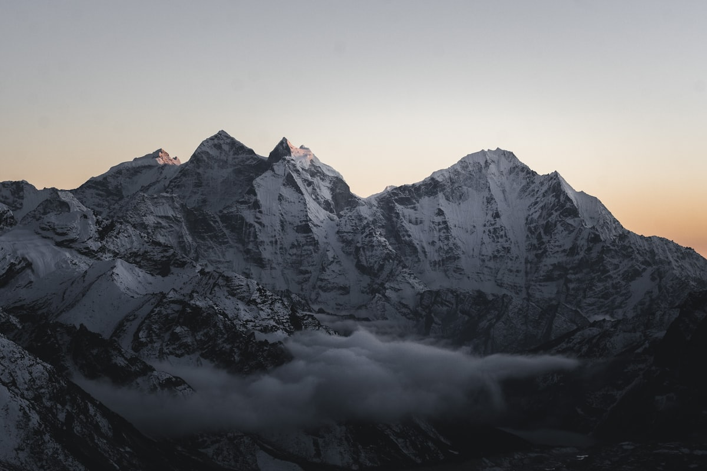
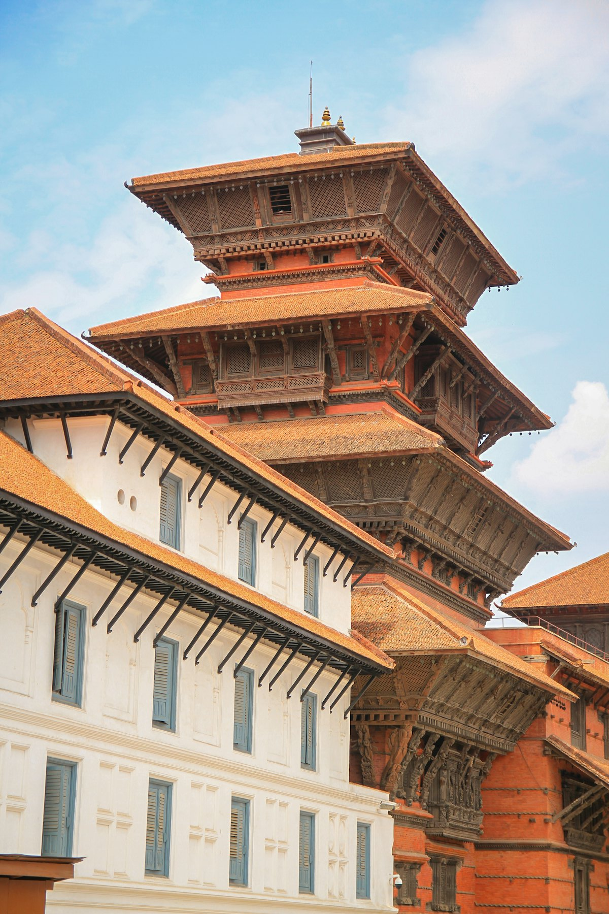
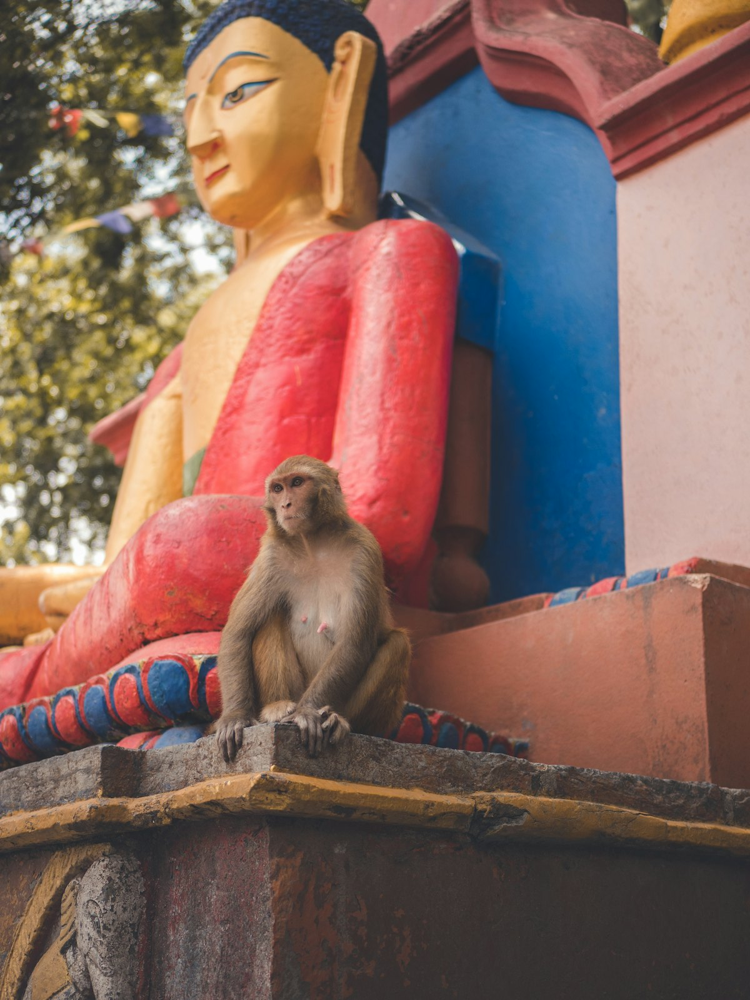
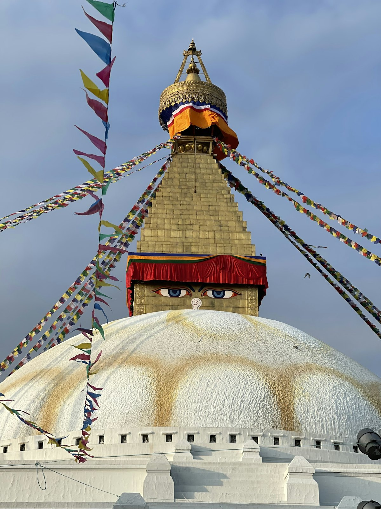
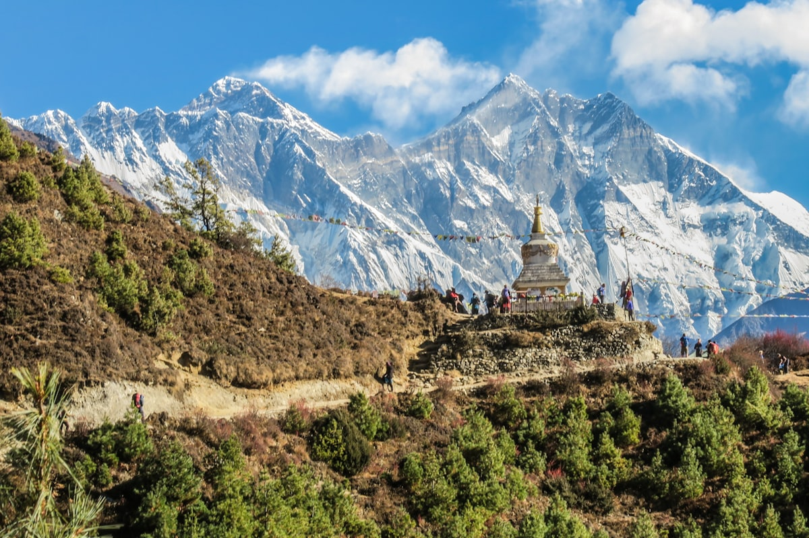
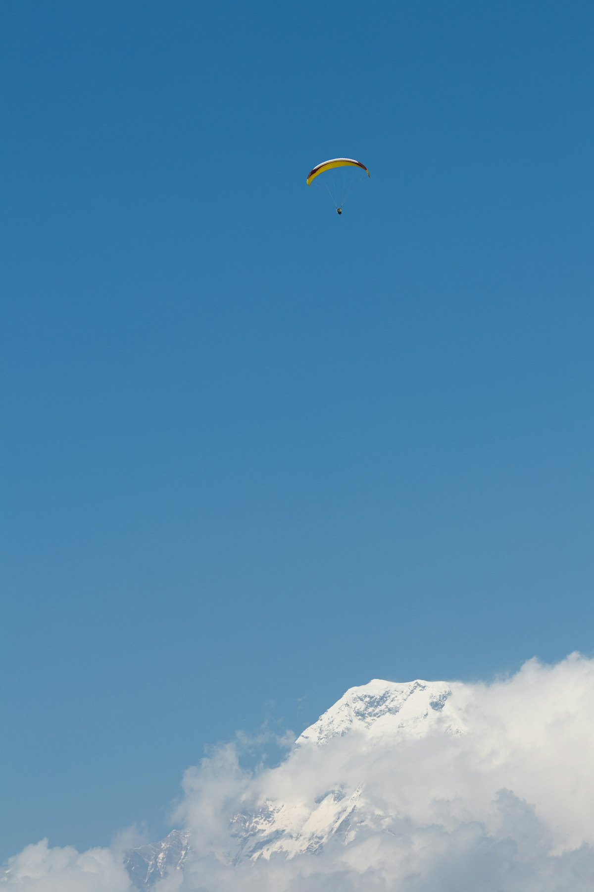
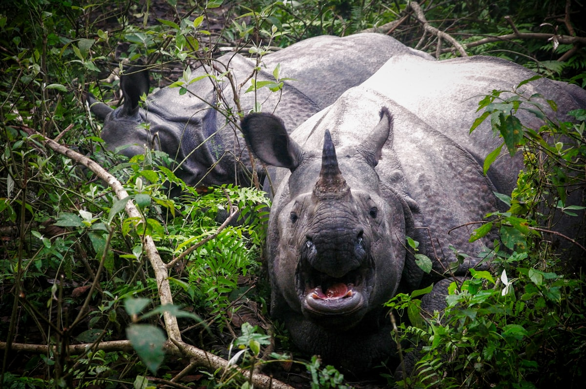
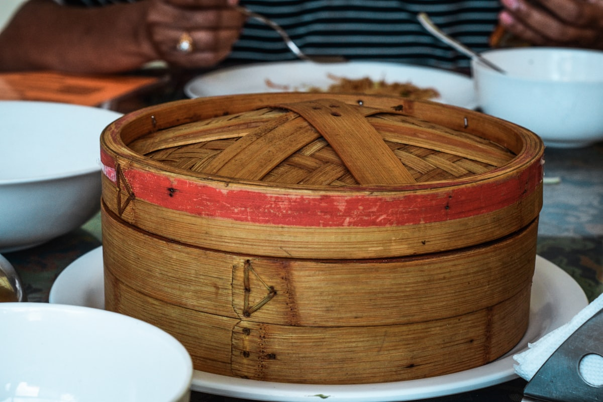

| 事项 | 结论 |
|---|---|
| 事项 | 结论 |
| 签证（最关键） | 中国护照落地签免费，15/30/90 天自选（默认 30 天），入境自助机填表即可，一年累计停留不超 150 天 |
| 推荐方案 | 加德满都谷地 3 天 + 博卡拉 4 天 + 奇特旺 2 天 + 购物/纳加阔特 3 天收尾 |
| 返程约束 | 第 12 天从加德满都返京；直飞每周班次有限，旺季提前 1 个月订票 |
| 行程链 | 加德满都 → 帕坦 → 博卡拉 → 奇特旺 → 纳加阔特 → 返程 |
| 预算（人均） | 经济 5000–8000 ／ 标准 9000–14000 ／ 舒适 20000–30000（人民币） |
| 三件提前事 | ① 订北京⇄加德满都往返机票 ② 加德满都—博卡拉机票/大巴 ③ 奇特旺套餐与滑翔伞提前订 |
| 季节提醒 | 10–11 月、3–5 月最佳（雪山能见度最高）；6–9 月雨季；12–2 月山区冷但晴空万里 |
以下为 12 天 11 晚的推荐节奏：加德满都谷地 → 博卡拉（湖区）→ 奇特旺（丛林）→ 加德满都购物 → 纳加阔特日出返程。每日主景点 ≤2 个，城市间以航班 + 旅游大巴为主。
| 日期 | 行程 | 过夜地 | 主题 |
|---|---|---|---|
| D1 抵加德满都 | 北京✈加德满都（约 5h），落地签入境，入住泰米尔区，傍晚街区踩点 | 加德满都 | 抵达+预热 |
| D2 | 猴庙日出 → 杜巴广场 → 泰米尔购物 | 加德满都 | 谷地圣迹 |
| D3 | 博达哈大佛塔 → 帕斯帕提那寺 → 帕坦古城 | 加德满都 | 信仰一日 |
| D4 | 加德满都✈博卡拉（25min），入住费瓦湖畔，湖边日落 | 博卡拉 | 飞向湖区 |
| D5 | 萨朗科日出+鱼尾峰 → 费瓦湖泛舟 → 和平塔徒步 | 博卡拉 | 雪山日 |
| D6 | 萨朗科滑翔伞 → 湖边复盘 → 摩托车环湖 | 博卡拉 | 天空日 |
| D7 | 自由活动：班迪普尔一日 / 骑行环湖 / 热气球蹦极 | 博卡拉 | 自由日 |
| D8 | 博卡拉→奇特旺（大巴约 6h），入住索拉哈，塔鲁族文化晚会 | 奇特旺 | 转场丛林 |
| D9 | 独木舟观鳄 → 丛林徒步 → 大象繁育中心 → 吉普车猎游 | 奇特旺 | 丛林日 |
| D10 | 清晨吉普车 → 大巴返加德满都 | 加德满都 | 返程日 |
| D11 | 加德满都扫货：羊绒/颂钵/唐卡 → 巴克塔普尔补漏 | 加德满都 | 购物日 |
| D12 返程 | 纳加阔特喜马拉雅日出（可选）→ 加德满都✈北京 | — | 收尾 |
以下为 12 天全程的逐小时执行时间线，可当作「当天打开照着走」的清单。标注 ※ 的可选项视体力与天气取舍。
| 时间 | 事项 |
|---|---|
| 05:30–09:30 | 北京✈加德满都（喜马拉雅航空直飞约 5h，大兴机场出发，注意值机截止时间） |
| 09:30–11:30 | 特里布万机场入境：自助机填表办落地签（免费），换少量卢比、办 Ncell 电话卡（约 ¥50 含流量） |
| 12:00–14:00 | 打车（约 ¥40–60）到泰米尔区入住，午餐 momo + 奶茶 |
| 15:00–18:00 | 泰米尔街区踩点：羊绒围巾、颂钵店比价，登屋顶看加都全景 |
| 19:00 | 晚餐 Dal Bhat（豆汤饭），早睡倒时差（时差仅 -2h15min） |
| 时间 | 事项 |
|---|---|
| 06:00–08:30 | 猴庙（斯瓦扬布纳，200 卢比）：清晨爬 365 级台阶，山顶四眼佛塔俯瞰加德满都全景，猴子会抢食别带零食 |
| 09:30–12:00 | 加德满都杜巴广场（1000 卢比）：活女神库玛丽庙、哈努曼多卡宫、卡斯特曼达普 |
| 12:30–14:00 | 老城 Asan 集市午餐：纽瓦丽传统菜 |
| 14:30–17:30 | 泰米尔购物：Pashmina 羊绒、纸灯笼、手工铜器（砍价从 5 折起） |
| 18:30 | 晚餐：泰米尔 rooftop 餐厅看加都夜景 |
| 时间 | 事项 |
|---|---|
| 07:30–09:30 | 博达哈大佛塔（400 卢比）：世界最大佛塔，绕塔顺时针转经三圈，屋顶咖啡馆视角最佳 |
| 10:00–11:30 | 帕斯帕提那寺（1000 卢比）：巴格玛蒂河畔印度教圣地，非教徒在河对岸观礼（严禁拍照火葬仪式） |
| 12:00–13:30 | 午餐：博达哈周边藏式餐馆（藏面、酥油茶） |
| 14:00–17:00 | 帕坦杜巴广场（1000 卢比）：三座古城中最精致，金庙 + 帕坦博物馆（木雕藏品绝佳） |
| 18:00 | 返加德满都，晚餐：尼泊尔咖喱 |
| 时间 | 事项 |
|---|---|
| 07:00–08:00 | 早班机加德满都✈博卡拉（25 分钟，¥700–800，清晨航班能见度最好，可窗外看雪山） |
| 08:30–10:00 | 入住费瓦湖畔酒店，湖边早餐看雪山 |
| 10:30–13:00 | 费瓦湖东岸散步，划船游湖（约 ¥50/小时）看湖心瓦拉希神庙 |
| 14:00–17:30 | 湖区闲逛：吊桥、书店、咖啡馆，顺路预订明日滑翔伞（¥500 上下） |
| 18:30 | 湖边晚餐：烤湖鱼 + 安纳普尔纳日落 |
| 时间 | 事项 |
|---|---|
| 04:30–06:00 | 包车/打车到萨朗科观景台（约 45 分钟），占位等日出 |
| 06:00–07:30 | 鱼尾峰 + 安纳普尔纳群峰日照金山：世界最著名的雪山日出之一，出片率极高 |
| 08:30–10:00 | 返湖边早餐，看滑翔伞陆续起飞 |
| 10:30–13:00 | 费瓦湖泛舟：船至湖心拍鱼尾峰倒影，登湖心瓦拉希神庙祈福 |
| 15:00–17:30 | 世界和平塔徒步（约 1h 上山），塔顶 360° 雪山 + 湖区全景 |
| 18:30 | 晚餐：湖畔牛排或尼泊尔火锅（可选） |
| 时间 | 事项 |
|---|---|
| 08:00–09:00 | 旅行社接驳到萨朗科起飞场（1,600m，含在套餐内） |
| 09:00–10:30 | 双人滑翔伞 25–30 分钟（约 8500 卢比，¥470 上下）：从雪山之上盘旋飞越费瓦湖上空 |
| 11:00–13:00 | 湖边咖啡馆复盘照片视频（GoPro 免费），午餐 |
| 14:00–17:00 | 自由安排：摩托车环湖 / 重走和平塔 / 天空塔观景 |
| 18:30 | 晚餐：momo 夜宵 + 湖边驻唱酒吧 |
| 时间 | 事项 |
|---|---|
| 08:00–12:00 | 可选 A：班迪普尔一日（巴士约 2h，山顶木屋小镇 + 雪山观景） |
| 08:00–12:00 | 可选 B：费瓦湖骑行环湖 + 戴维斯瀑布 |
| 12:30–14:00 | 午餐：湖边各国料理（中餐选择多） |
| 14:30–17:30 | 可选 C：滑翔伞加长 / 热气球（约 ¥900）/ 峡谷蹦极（约 ¥600） |
| 18:30 | 晚餐 + 湖区夜市闲逛 |
| 时间 | 事项 |
|---|---|
| 07:30–14:00 | 博卡拉→索拉哈旅游大巴（约 6h，¥60–100），沿途山区与特莱平原风光 |
| 14:30–15:30 | 酒店接驳入住丛林小屋，短暂休整 |
| 16:00–17:30 | 塔鲁族村落漫步：土墙民居、手工编织、吊桥 |
| 18:00–19:30 | 塔鲁族文化晚会（棍棒舞 + 火舞，套餐含） |
| 20:00 | 早睡，明早 5 点吉普车猎游 |
| 时间 | 事项 |
|---|---|
| 05:30–08:00 | 清晨丛林徒步/观鸟：娑罗双树林看独角犀牛晨浴（有 700 余头） |
| 08:30–10:00 | 独木舟漂流：拉普提河上近距离看鳄鱼、翠鸟与水鸟（540+ 种鸟类） |
| 10:30–12:30 | 大象繁育中心 + 大象洗澡互动 |
| 14:30–17:30 | 吉普车猎游 4h：深入核心区找犀牛、鹿、懒熊，运气好见孟加拉虎 |
| 19:00 | 晚餐：塔鲁风味咖喱，早睡 |
| 时间 | 事项 |
|---|---|
| 07:30–08:30 | 清晨吉普车短程猎游（可选）或睡到自然醒 |
| 09:30–10:30 | 早餐后退房，采购当地蜂蜜、手工皂 |
| 11:00–17:00 | 索拉哈→加德满都旅游大巴（约 6h） |
| 17:30–19:00 | 入住泰米尔，晚餐：庆功宴 |
| 19:30 | 伴手礼补比价：羊绒围巾、颂钵、喜马拉雅盐灯 |
| 时间 | 事项 |
|---|---|
| 08:30–12:00 | 泰米尔扫货：Pashmina 羊绒围巾、颂钵、唐卡、纸灯笼（对半砍价） |
| 12:00–13:30 | 午餐：Asan 集市小吃巡游 |
| 14:00–17:00 | 巴克塔普尔补漏（1500 卢比）：中世纪陶艺广场，酸奶 Juju Dhau 必吃 |
| 18:00 | 晚餐：杜巴广场附近屋顶餐厅 |
| 19:30 | 回酒店打包行李，护照/登机牌再三确认 |
| 时间 | 事项 |
|---|---|
| 04:30–06:00 | 出发纳加阔特（车程约 1.5h），山顶看喜马拉雅群峰日出（天晴可远眺珠峰与安纳普尔纳） |
| 08:00–09:30 | 返加德满都早餐，退房 |
| 10:30–15:30 | 加德满都✈北京（约 5h），大兴机场入境 |
| 16:00 | 到家休息，整理照片与攻略笔记 |
必去（必去）/ 顺路（顺路）/ 可跳过（可跳过）。

必去
必去
必去
必去
必去
必去
顺路图片为 Unsplash 主题图（加德满都、博达哈大佛塔、费瓦湖、奇特旺等均为尼泊尔实景），用于页面配图。更多免费/低费景点：帕坦杜巴广场、和平塔、班迪普尔、巴克塔普尔陶艺广场。
点击左侧节点可在地图上定位；点击地图 marker 会高亮对应节点。坐标为 WGS-84 转 GCJ-02 纠偏后标注。
以下为单人、不含购物的估算，人民币计价；出发地基准北京。汇率按 1 人民币 ≈ 18 尼泊尔卢比（1 美元 ≈ 130 卢比）估算，往返机票按淡季 3000 元上下计。
| 项目 | 经济（5000–8000） | 标准（9000–14000） | 舒适（20000–30000） |
|---|---|---|---|
| 往返机票 | 北京⇄加德满都 2500–3500 | 直飞含国内段 3500–4500 | 直飞+灵活舱位 6000–9000 |
| 住宿（11 晚） | 青旅/民宿 700–1200 | 经济酒店 2200–3500 | 精品度假村 7000–11000 |
| 国内交通+活动 | 大巴为主 1000–1800 | 航班+滑翔伞+奇特旺套餐 2000–3000 | 包车+全活动 3500–6000 |
| 餐饮+门票 | 路边馆+遗产门票 700–1200 | 正常下馆子 1500–2200 | 高档餐饮+观景餐厅 2500–4000 |
带孩子推荐：加德满都只留 2 天（猴庙 + 杜巴广场），奇特旺住 3 天玩吉普车、骑大象与大象繁育中心，博卡拉滑翔伞换成乘船 + 和平塔短程徒步，全程包车减少转场。奇特旺丛林徒步 12 岁以下谨慎参加，吉普车后排颠簸备好晕车药。
12–2 月山区早晚极冷但晴空万里，纳加阔特看喜马拉雅日出概率全年最高，博卡拉比加德满都暖 5–8℃；6–9 月雨季加都—博卡拉航班易延误改期，奇特旺植被更茂密、独木舟观鸟更佳，但务必注意饮食卫生。时间紧可把奇特旺缩为 1 天或取消纳加阔特。
| 方式 | 时长 | 参考价 | 备注 |
|---|---|---|---|
| 直飞（推荐） | 北京→加德满都约 5h | 往返 3000–4500 元 | 喜马拉雅航空直飞大兴，每周班次有限，旺季提前 1 个月订 |
| 转机 | 8–14h | 2500–4000 元 | 经成都/昆明/曼谷/香港，选择多但费时 |
| 陆路 | — | — | 经拉萨—吉隆口岸可陆路入境（需提前办边防与入境手续），行程长、慎选 |
| 区域 | 价格/晚 | 优点 | 短板 |
|---|---|---|---|
| 加德满都·泰米尔区 | 青旅 40–80 / 经济 100–250 / 标准 300–600 | 游客中心，餐厅换汇旅行社一应俱全 | 街道吵闹，老楼隔音差 |
| 加德满都·博达哈区 | 标准 300–800 | 大佛塔旁清净，藏式风情浓 | 离泰米尔约 30 分钟车程 |
| 博卡拉·费瓦湖畔 | 经济 100–250 / 标准 300–700 / 度假村 800–1500 | 湖景+雪山，咖啡馆酒吧集中 | 旺季房源紧，提前 2 周订 |
| 奇特旺·索拉哈 | 套餐含住宿 150–400 | 丛林小屋、吊桥河流景观 | 设施简单，偶有停电 |
| 纳加阔特 | 观景房 200–600 | 喜马拉雅日出最佳机位 | 只适合过夜，餐饮选择少 |